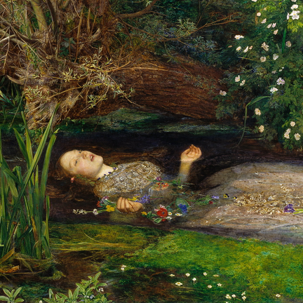

Tasty Radio
A radio app that plays several stations at once — and records the mix.
Download for AndroidAndroid 10 or newer · about 38 MB · free, no account
…or use it in a browser, with nothing to install:
radio.truthseekersbyo.com
— you'll need the access code. Ask Tom.
Installing it
- Tap the button above. Your browser will warn you about downloading a file — that's normal for apps that don't come from the Play Store. Choose Download anyway.
- Open the downloaded file. Android will ask whether to allow this browser to install apps. Say yes, then tap Install.
- Open Tasty Radio. Three mixes are already in it.
You only do this once. The app tells you when there's a new version and updates itself.
What it does
Plays several stations at once
Up to four, each with its own fader, mute and tone. Gregorian chant under dark ambient is a different thing than either one on its own.
Records the mix
One button. What you hear is what lands in the file, ready to send to someone.
Finds stations offline
62,000 of them, indexed on the phone. Search "religion" and Vatican Radio comes up.
Also works in a browser
The same stations, the same mixes, the same record button — on a wide screen the mixer becomes a proper desk, one channel strip per station.